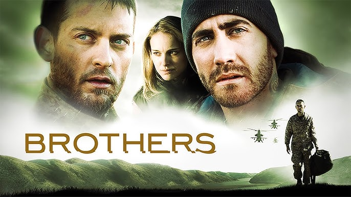
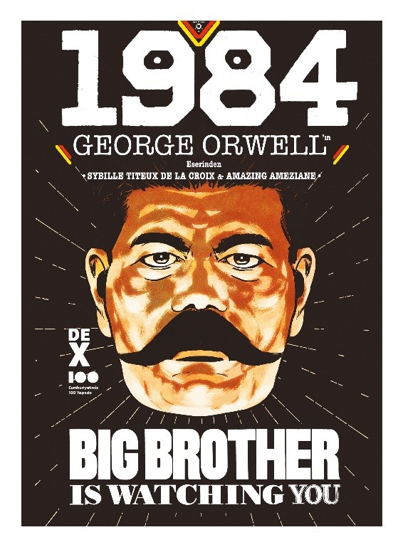

Merhaba ben Umut Faruk Yarımbaş, Ankara'da yaşıyorum. Finans ile ilgileniyorum. Patika sayesinde sayenizde yazılım öğrenme yolculuğumuza da başladım.
Tobey Maguire , Natalie Portman ve Jake Gyllenhaal gibi sevdiğim oyuncuların başrollerde oynadığı, savaşın insan üzerinde nasıl kalıcı izler bıraktığını ve geri dönenlerin nasıl artık eski hayatlarının bir parçası olmadığı üzerine sade ama güzel bir senaryosu olan oyunculuk ve yönetmenliğini beğendiğim bir film
Her ne kadar en popüler kitaplardan biri olsa da gene de toplumlar tarafından ders çıkartılmayan en saf haliyle bir uyarı metni
